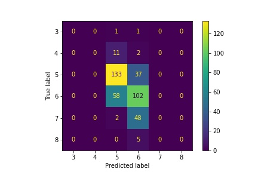
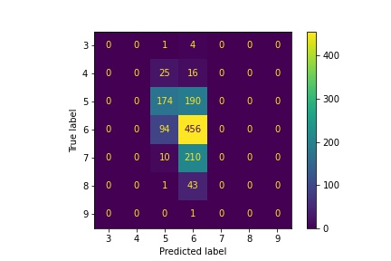
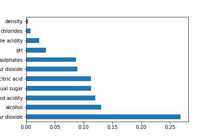

Support Vector Machine Model
Another model used on the datasets was the support vector machine, or SVM, model using the scikit-learn library in python. For these datasets, the linear kernel was used. It yielded similar accuracy scores as the other models. Initial accuracy scores on the test data yielded 0.58 for the red wine data and 0.51 for the white wine data. Using the grid search function to find the best parameters for the SVM model did not yield better accuracy scores: 0.59 for the red wine data and 0.51 for the white wine data.
As seen in both the confusion matrices for red and white data, the SVM model only predicted quality scores of 5 or 6. This was expected given most of the red and white wine samples had a quality score of 5 or 6. After quality scores of 5 and 6, wine samples with a quality score of 7 was the third most frequent score. Despite this, the SVM model was not able to correctly predict any wines with a quality score of 7. Moreover, the SVM model was not able to distinguish higher quality wines (i.e. wines with quality scores of 7, 8, or 9) and thus predicted those wines to have lower quality scores (5 or 6).
Confusion matrix for the SVM model on red wine data
Confusion matrix for the SVM model on white wine data
After training the linear SVM model on the data it was important to explore what main features, in this case, what chemical properties were used by the model to classify the quality scores.
This was done by obtaining the coefficients of the classifiers using .coef_ on the SVM model. As seen in the plots below, volatile acidity was the most important feature in classifying the red wine data. Total sulfur dioxide and alcohol content were the next two imortant features.
Fixed acidity and pH level were the features with the smallest coefficients.
For the white wine data, the most important feature was free sulfur dioxide followed by alcohol content and fixed acidity. Density and chlorides had the smallest coefficients and had little importance in classifying the data.
